Show the code
set.seed(1337)
library("tidymodels")
tidymodels::tidymodels_prefer()
library("plotly")Set seed and load packages.
set.seed(1337)
library("tidymodels")
tidymodels::tidymodels_prefer()
library("plotly")Load data.
count_matrix_clr <- readr::read_rds("https://github.com/WilliamH-R/BioStatistics/raw/main/data/count_matrix/count_matrix_clr.rds") |>
select(-"NA")
meta <- read.csv(file = "data/metadata.txt") |>
as_tibble() |>
select(Run, chem_administration, ETHNICITY, geo_loc_name,
Host_age, host_body_mass_index, Host_disease, host_phenotype, host_sex) |>
rename(Sample = Run,
Treatment = chem_administration,
Ethnicity = ETHNICITY,
Location = geo_loc_name,
Age = Host_age,
BMI = host_body_mass_index,
Disease_severity = Host_disease,
EDSS = host_phenotype,
Sex = host_sex) |>
mutate(Patient_status = case_when(Disease_severity == "1HealthyControl" ~ "Healthy",
TRUE ~ "MS"),
EDSS = as.factor(EDSS),
EDSS = case_when(is.na(EDSS) & Disease_severity == "1HealthyControl" ~ "-1",
is.na(EDSS) & Disease_severity != "1HealthyControl" ~ "Unknown",
TRUE ~ EDSS),
EDSS = as.factor(EDSS))Multiple reasons for applying Principal Component Analysis (PCA) exists. One of the most common reasons is to visualize high-dimensional data in lower dimensions. Another reason could be to decorrelate variables or to reduce the noise in the data by only maintaining the variables that contain most of the variance.
When having more than 3 variables, it is not possible to visualize them in a single plot. To overcome this, PCA can reduce the dimensionality of the data to lower dimensions (e.g. 2 or 3) while preserving the variance of the data. Each Principal Component (PC) is a linear combination of the original variables, and can now be considered as a variable on its own replacing the originals. A data set with many variables, e.g. the 123 variables in the count matrix, can be visualised with a 2D plot. Loosing that many dimensions is almost bound to loose some information, but a PCA optimizes towards retaining as much as possible.
To exemplify and showcasing the method and the underlying math, the mtcars data set is used. For this example, two dimensions wt (weight) and mpg (miles pr. gallon) are used. The points are coloured by cyl (cylinders) to show how the data is grouped in the 2D space. The goal is to retain the information, but reduce the dimensions to a single line that best describes the data. This line is called the first Principal Component (PC1).
mtcars |>
ggplot(aes(x = wt,
y = mpg,
col = cyl)) +
geom_point(size = 3) +
labs(title = "Miles pr Gallon vs Weight",
x = "Weight (1000 lbs)",
y = "Miles pr Gallon",
colour = "Cylinders") +
scale_colour_viridis_c()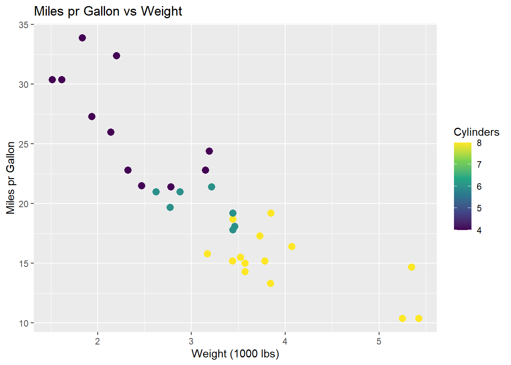
The data is centered, i.e. the mean of each variable is subtracted from each observation within that variable.
\[ X_{i,j \;centered} = X_{i,j} - \mu_{j} \]
Where X is the data matrix, i is the observation and j is the variable and \(\mu\) the mean. By subtracting the mean, all data observations are centered around the origin. This makes some mathematical operations easier, such as rotating the coordinate system. Centering the data do not affect the correlation between observations. The resulting plot is then:
mtcars |>
ggplot(aes(x = wt - mean(wt),
y = mpg - mean(mpg),
col = cyl - mean(cyl))) +
geom_point(size = 3) +
labs(title = "Miles pr Gallon vs Weight",
x = "Weight (1000 lbs)",
y = "Miles pr Gallon",
colour = "Cylinders") +
scale_colour_viridis_c()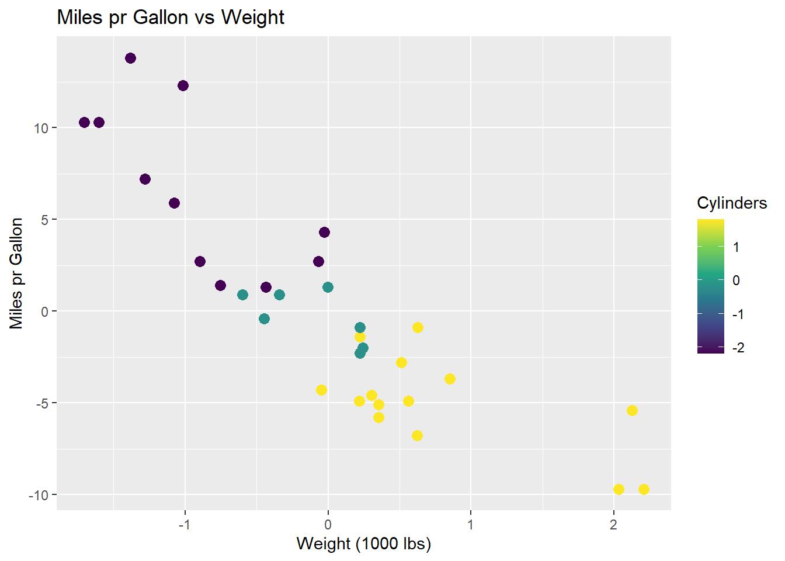
A line is to be fit to the data. This line should maximize the variance of the data, i.e. maximize the sum of squared distances from the origin to the points projected on to the line. A rough sketch of the scenario can be seen below. A proposed best fit line, that maximizes the variance of the data, is drawn in red. The dashed green line is a point projected onto the proposed best fit line. The dashed blue line is the distance from the point on the line to the origin. It is the length of the blue line that is maximized across all data points.
mtcars |>
ggplot(aes(x = wt - mean(wt),
y = mpg - mean(mpg),
col = cyl - mean(cyl))) +
geom_point(size = 3) +
geom_abline(intercept = 0, slope = -6, colour = "red") +
geom_segment(aes(x = -1, y = 12.5, xend = -1.35, yend = 8.4),
colour = "green",
linetype = "dashed",
size = 1) +
geom_segment(aes(x = -1.35, y = 8.4, xend = 0, yend = 0),
colour = "steelblue",
linetype = "dashed",
size = 1) +
labs(title = "Miles pr Gallon vs Weight",
x = "Weight (1000 lbs)",
y = "Miles pr Gallon",
colour = "Cylinders") +
scale_colour_viridis_c()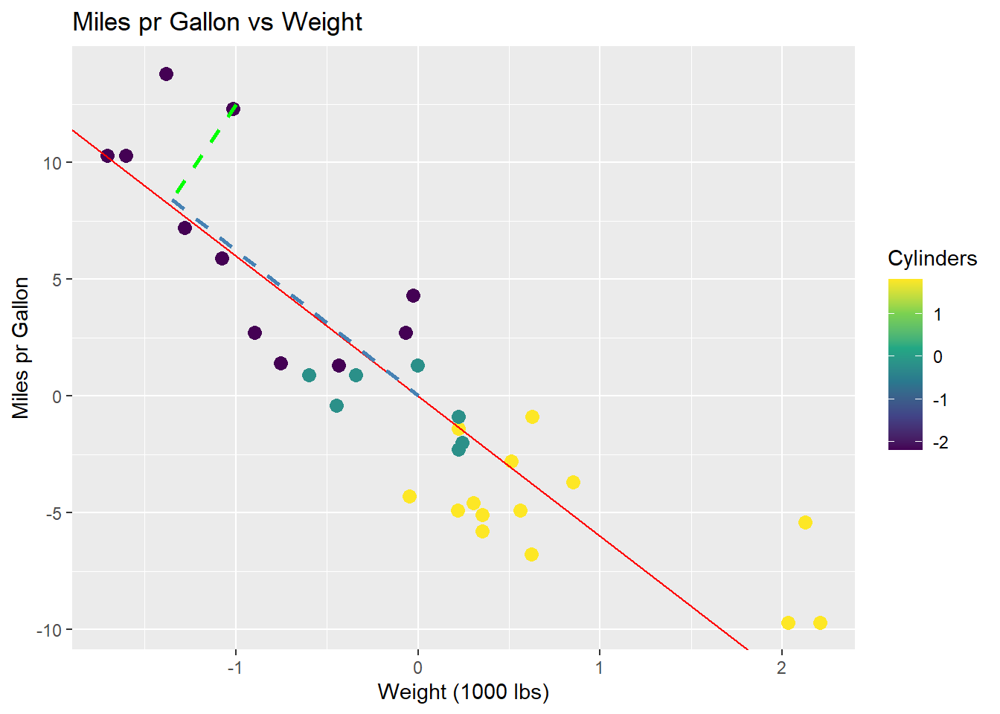
The line that maximizes the sum of squared distances is called the first Principal Component (PC1). All future Principal Components are orthogonal to the previous, and run through the origin, which means no optimization. To visualize PC1, all data points are projected onto the line, and the line is rotated to be horizontal and act as a new x-axis. The resulting plot is:
pca <- mtcars |>
select(wt, mpg) |>
prcomp(center = TRUE) |>
tidy(matrix = "x") |>
pivot_wider(names_from = "PC",
names_prefix = "PC",
values_from = "value") |>
rename(car = row)
pca_mtcars <- pca |>
left_join(mtcars |>
rownames_to_column(var = "car"),
by = "car")
pca_mtcars |>
ggplot(aes(x = PC1,
y = 0,
col = cyl)) +
geom_point(size = 3) +
labs(title = "Miles pr Gallon vs Weight",
x = "PC1",
y = "",
colour = "Cylinders") +
scale_colour_viridis_c()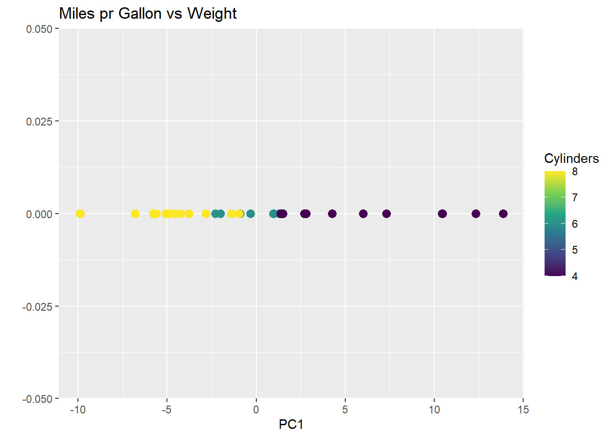
As can be observed from plotting PC1, the groupings of the data is conserved, but the dimensions are reduced to a single line. The same method can be applied to high dimensional data, such as the count matrix.
To mathematically describe the method the covariance matrix, often denoted \(\Sigma\), of the data is calculated. The covariance matrix is a square matrix where the diagonal contains the variance of each variable, and the off-diagonal contains the covariance between each variable:
\[ \Sigma = \begin{bmatrix} Var(x_1) & Cov(x_2, x_1) \\ Cov(x_1, x_2) & Var(x_2) \end{bmatrix} \]
Where \(x_1\) and \(x_2\) are columns in a data set \(X\). The variance in a variable is the spread of the data along the axis, and the covariance is the spread of the data between the axes. The covariance matrix is symmetric, meaning the covariance between \(x_1\) and \(x_2\) is the same as the covariance between \(x_2\) and \(x_1\). The variance of each variable is calculated as:
\[ Var(x) = \frac{1}{n-1} \sum_{i=1}^{n} (x_i - \mu_x)^2 \]
Remember that the data was centered by subtracting the mean, \(\mu_x\). As a consequence, the mean of all columns of \(X\) is 0, and the expression can be reduced to:
\[ Var(x) = \frac{1}{n-1} \sum_{i=1}^{n} (x_i)^2 \] The covariance between two variables is calculated as:
\[ Cov(x_1, x_2) = \frac{1}{n-1} \sum_{i=1}^{n} (x_{1i} - \mu_{x_1})(x_{2i} - \mu_{x_2}) \]
Where \(x_{1i}\) and \(x_{2i}\) are the \(i\)’th observations in columns \(x_1\) and \(x_2\), respectively. Again, the mean is zero, and the expression can be reduced to:
\[ Cov(x_1, x_2) = \frac{1}{n-1} \sum_{i=1}^{n} (x_{1i} \cdot x_{2i}) \]
The covariance of the mtcars data set used in the example is then:
mtcars |>
select(wt, mpg) |>
cov() wt mpg
wt 0.957379 -5.116685
mpg -5.116685 36.324103As the covariance matrix show how the variables varies within themselves and between each other, the eigenvectors of such a matrix spans the directions in the feature space where the data have the most variance. By convention, eigenvectors have unit length (length 1), and as such it is their associated eigenvalues that quantify the length of the eigenvector, and thereby the variance explained by each eigenvector.
To find the eigenvectors, the eigenvalues are found first by solving the equation:
\[ det(\Sigma - \lambda I) = 0 \]
Where \(\Sigma\) is the covariance matrix, \(\lambda\) is the eigenvalue, and \(I\) is the identity matrix. As the covariance matrix in the example is a 2x2 matrix, the identity matrix is likewise a 2x2 matrix and two eigenvalues are found. The eigenvalues are then found by solving the equation:
$$ det( \[\begin{bmatrix} 0.96 & -5.12 \\ -5.12 & 36.32 \end{bmatrix}\]=
det( \[\begin{bmatrix} (0.96 - \lambda) & -5.12 \\ -5.12 & (36.32 - \lambda) \end{bmatrix}\])
=
0 $$
It can be further simplified to:
\[ (0.96 - \lambda)(36.32 - \lambda) - (-5.12 \cdot -5.12) =\\ 34.87 - 0.96\lambda - 36.32\lambda + \lambda^2 - 26.21 = \\ 8.66 - 37.28\lambda + \lambda^2 = 0 \]
Solving the quadratic equation, the \(\lambda\) values are:
\[ \lambda_1 = 37.05, \; \; \lambda_2 = 0.234 \]
The eigenvectors are then found by solving the equation:
\[ \Sigma \cdot v = \lambda \cdot v \]
Where \(\Sigma\) is the covariance matrix, \(v\) is the eigenvector, and \(\lambda\) is the eigenvalue. For the two eigenvectors, the equations are:
$$ \[\begin{bmatrix} 0.96 & -5.12 \\ -5.12 & 36.32 \end{bmatrix} \cdot\]v_1 = 37.05 v_1 \
\[\begin{bmatrix} 0.96 & -5.12 \\ -5.12 & 36.32 \end{bmatrix} \cdot\]v_2 = 0.234 v_2
$$
The two vectors are then:
\[ v_1 = \begin{bmatrix} -0.14 \\ 1 \end{bmatrix}, \; \; v_2 = \begin{bmatrix} 7.05 \\ 1 \end{bmatrix} \]
In unit length, the eigenvectors are:
\[ v_1 = \begin{bmatrix} -0.14 \\ 1 \end{bmatrix}, \; \; v_2 = \begin{bmatrix} 1 \\ 0.14 \end{bmatrix} \] ### Plotting of Eigenvectors Two eigenvectors can be plotted on top of the data to show the direction of the variance in the data. The green line is the first eigenvector, i.e. has the largest eigenvalue, and the blue line is the second eigenvector. An immediate observation is, that these two lines are not orthogonal, which is a requirement for eigenvectors. This is due to the scaling of the plot.
mtcars |>
ggplot(aes(x = wt - mean(wt),
y = mpg - mean(mpg),
col = cyl - mean(cyl))) +
geom_point(size = 3) +
geom_segment(aes(x = 0, y = 0, xend = -0.14, yend = 1),
colour = "green",
size = 1) +
geom_segment(aes(x = 0, y = 0, xend = 1, yend = 0.14),
colour = "steelblue",
size = 1) +
labs(title = "Miles pr Gallon vs Weight",
x = "Weight (1000 lbs)",
y = "Miles pr Gallon",
colour = "Cylinders") +
scale_colour_viridis_c()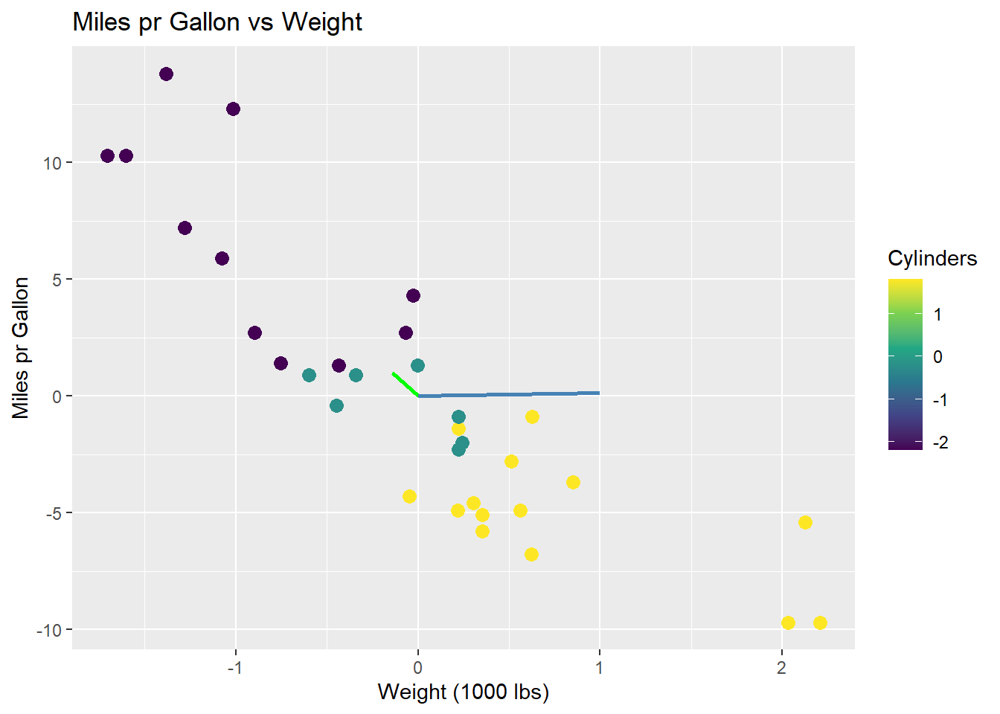
To visually show that the two eigenvectors are indeed orthogonal, the plot can either be scaled to have the same aspect ratio on both axis, or to limit the axis to the same range:
mtcars |>
ggplot(aes(x = wt - mean(wt),
y = mpg - mean(mpg),
col = cyl - mean(cyl))) +
geom_point(size = 3) +
geom_segment(aes(x = 0, y = 0, xend = -0.14, yend = 1),
colour = "green",
size = 1) +
geom_segment(aes(x = 0, y = 0, xend = 1, yend = 0.14),
colour = "steelblue",
size = 1) +
labs(title = "Miles pr Gallon vs Weight",
x = "Weight (1000 lbs)",
y = "Miles pr Gallon",
colour = "Cylinders") +
scale_colour_viridis_c() +
coord_fixed()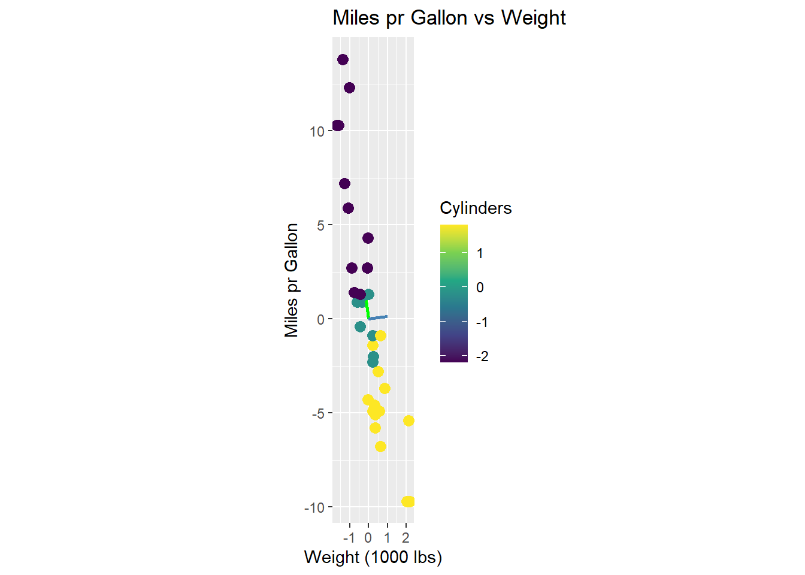
mtcars |>
ggplot(aes(x = wt - mean(wt),
y = mpg - mean(mpg),
col = cyl - mean(cyl))) +
geom_point(size = 3) +
geom_segment(aes(x = 0, y = 0, xend = -0.14, yend = 1),
colour = "green",
size = 1) +
geom_segment(aes(x = 0, y = 0, xend = 1, yend = 0.14),
colour = "steelblue",
size = 1) +
labs(title = "Miles pr Gallon vs Weight",
x = "Weight (1000 lbs)",
y = "Miles pr Gallon",
colour = "Cylinders") +
scale_colour_viridis_c() +
lims(x = c(-2, 2), y = c(-2, 2))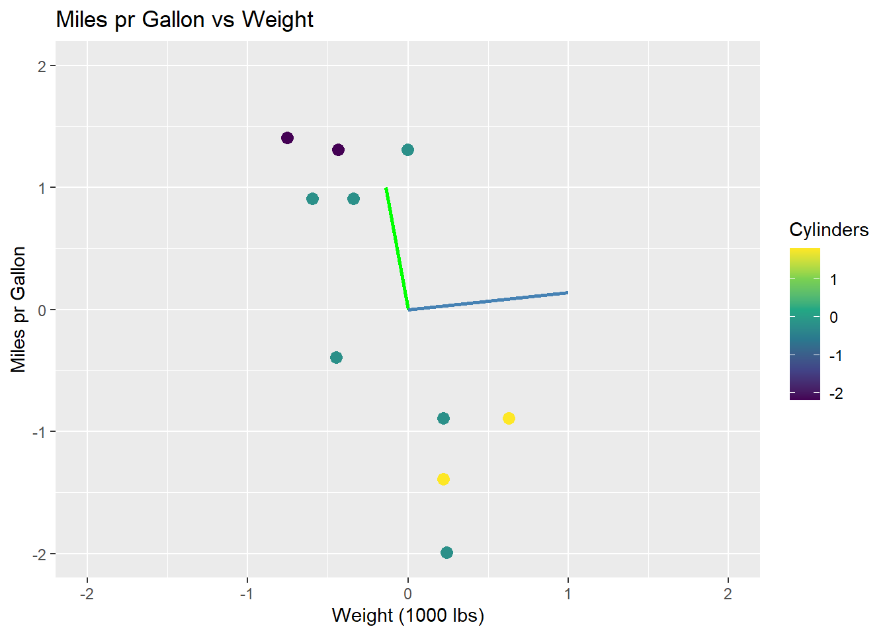
The issue of scaling goes to show how important it is, that values are on the same scale before applying PCA. If the values are not on the same scale, the PCA will be biased towards the variables with the largest values. This can be seen in the example, where the wt variable has a larger range than the mpg variable. The eigenvectors are then biased towards the wt variable. The data can be scaled by both centering and dividing by the standard deviation, which is called standardization. The data is then on the same scale, and the PCA is not biased towards any variable:
\[ X_{i,j \;standardized} = \frac{X_{i,j} - \mu_{j}}{sd_j} \]
Where X is the data matrix, i is the observation and j is the variable, \(\mu\) is the mean and \(sd\) is the standard deviation. Using standardized data, the eigenvectors and their eigenvalues are:
, ; ; _1 = 1.87\
v_2 = \[\begin{bmatrix} 0.707 \\ 0.707 \end{bmatrix}\], ; ; _2 = 0.13 $$
The eigenvectors are now orthogonal, and the first eigenvector (green) is the one that maximizes the variance of the data. The eigenvectors are scaled by their associated eigenvalue:
mtcars |>
ggplot(aes(x = (wt - mean(wt))/sd(wt),
y = (mpg - mean(mpg))/sd(mpg),
col = (cyl - mean(cyl)/sd(cyl)))) +
geom_point(size = 3) +
geom_segment(aes(x = 0, y = 0, xend = 0.707*1.87, yend = -0.707*1.87),
colour = "green",
size = 1) +
geom_segment(aes(x = 0, y = 0, xend = 0.707*0.13, yend = 0.707*0.13),
colour = "steelblue",
size = 1) +
labs(title = "Miles pr Gallon vs Weight",
x = "Weight (1000 lbs)",
y = "Miles pr Gallon",
colour = "Cylinders") +
scale_colour_viridis_c()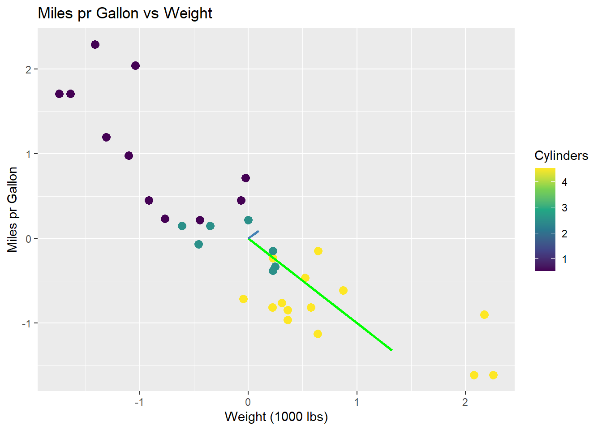
Using all PCs, it is possible to fully reconstruct the data since the data is projected onto the PCs, it can be converted back to the original space. The total variance of the data is the sum of the eigenvalues, and the variance explained by each PC is the eigenvalue of that PC. Therefore, it is also possible to calculate the proportion of variance explained by each PC. For the case of the scaled data, the two eigenvalues were \(\lambda_1 = 1.87\) and \(\lambda_2 = 0.13\). The proportion of variance explained by each PC is then:
\[ \frac{\lambda_1}{\lambda_1 + \lambda_2} = 0.94, \; \; \frac{\lambda_2}{\lambda_1 + \lambda_2} = 0.06 \]
The proportion of variance explained by each PC is usually plotted to get an idea of how many PCs are needed to explain the data. The plot is called a scree plot, and can be seen below:
var_explained <- tibble(prop_explained = c(0.94, 0.06),
PC = c("PC1", "PC2"))
var_explained |>
ggplot(aes(x = PC,
y = prop_explained)) +
geom_col(fill = "steelblue") +
geom_text(aes(label = prop_explained),
vjust = -0.5) +
scale_y_continuous(expand = c(0, 0.06)) +
labs(title = "Proportion of Variance Explained",
x = "Principal Component",
y = "Proportion Explained")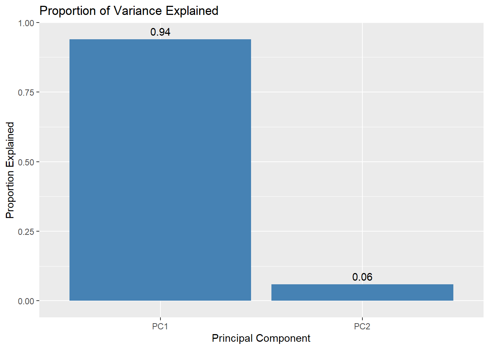
The original data can be projected onto the PCA space by multiplying the data matrix with the eigenvectors. The projection ensures a change of basis, such that PC1 is the new x-axis, PC2 is the new y-axis, and so forth. The projection happens by:
\[ S = XU \]
Where \(S\) is the projected data, \(X\) is the original data matrix, and \(U\) is the matrix of eigenvectors. The matrix \(U\) then essentially works as a rotation matrix, rotating the data into the PCA space. When projecting unto fewer dimensions, the data is reduced to the number of eigenvectors (PCs) used in \(U\).
As an example, the first observation in the scaled mtcars data set is projected onto the PCA space. The projection happens by:
\[ S = \begin{bmatrix} -0.6 & 0.91 \end{bmatrix} \cdot \begin{bmatrix} -0.14 & -0.99 \\ 0.99 & -0.14 \end{bmatrix} = \begin{bmatrix} 0.98 & 0.46 \end{bmatrix} \]
The data point \((-0.6, 0.91)\) is then rotated such that the coordinates are \((0.98, 0.46)\) in the PCA space. What is important to note is how the values of the rotation matrix are used to rotate the data point.
Each data point in the original space are on the form \((x, y) = (wt, mpg)\), so the first coordinate denotes wt and the second denotes mpg. Similarly, each PC consists of two coordinates. The first is multiplied by the first coordinate of the data point (here wt), and the second is multiplied by the second coordinate of the data point (here mpg) as per the definition of a matrix product. This implies, that the values of the eigenvectors are the weights of the data points in the PCA space. The first eigenvector has the values \((-0.14, 0.99)\), which means that the first coordinate of the data point is multiplied by \(-0.14\) and the second coordinate is multiplied by \(0.99\), i.e. the second coordinate is weighted more than the first. This can be related back to the fact, that mpg has a larger range than wt, and as such the first PC is primarily explains mpg. As mentioned, the data is not scaled, and so this is a biased conclusion.
The important implication of this is, that a row in the rotation matrix contains values describing how each PC weights the original variables. A common method is to plot the loadings, i.e. the rows of the rotation matrix, in the PCA space. The loadings are equal to the eigenvector matrix \(U\), but is at times scaled by the square root of the eigenvalues. It is done to encapsulate the difference in variance each PC explains. The loadings are then used to interpret the data in the PCA space, as they show which variables that drive the variance within in PC. By using the R function prcomp the loadings is found as rotation. As can be observed, the loading for mpg points in the direction of PC1 where the biggest variance (spread) is observed. Once again, this is a biased observation, as the data is not scaled.
loadings <- mtcars |>
select(wt, mpg) |>
prcomp(center = TRUE) |>
tidy(matrix = "rotation") |>
pivot_wider(names_from = "PC",
names_prefix = "PC",
values_from = "value")
arrow_style <- arrow(angle = 20,
ends = "first",
type = "closed",
length = grid::unit(8, "pt"))
pca_mtcars |>
ggplot() +
geom_point(aes(x = PC1,
y = PC2),
size = 3,
color = "steelblue") +
geom_segment(aes(x = PC1, y = PC2),
data = loadings,
xend = 0,
yend = 0,
arrow = arrow_style) +
geom_text(aes(x = PC1,
y = PC2,
label = column),
data = loadings,
nudge_y = -0.2,
color = "orange") +
labs(title = "PC2 vs PC1",
x = "PC1",
y = "PC2") +
coord_fixed()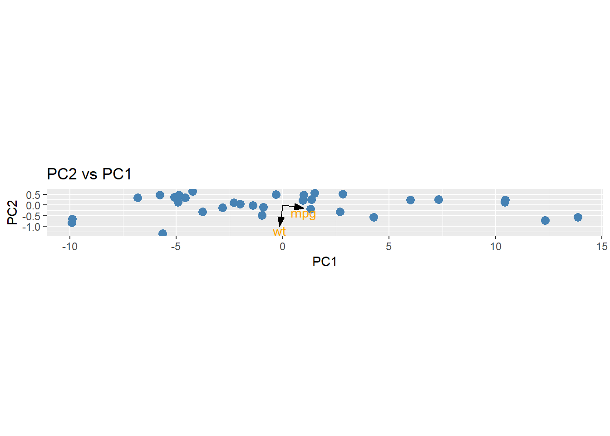
To apply PCA to an example of higher dimensions, the count matrix is used. The built in function prcomp is used to calculate the PCs along with the loadings and eigenvalues (explained variance).
pca_count_matrix <- count_matrix_clr |>
column_to_rownames(var = "Sample") |>
prcomp(center = TRUE,
scale = TRUE)The proportion of variance explained by each PC is calculated and plotted. Here, the first PC explains less than 1% of the variance.
pca_count_matrix |>
tidy(matrix = "eigenvalues") |>
ggplot(aes(x = reorder(PC, -percent),
y = percent)) +
geom_col(fill = "steelblue") +
scale_y_continuous(expand = c(0, 0)) +
labs(title = "Proportion of Variance Explained",
x = "Principal Component",
y = "Proportion Explained") +
theme(axis.text.x = element_blank(),
axis.ticks.x = element_blank())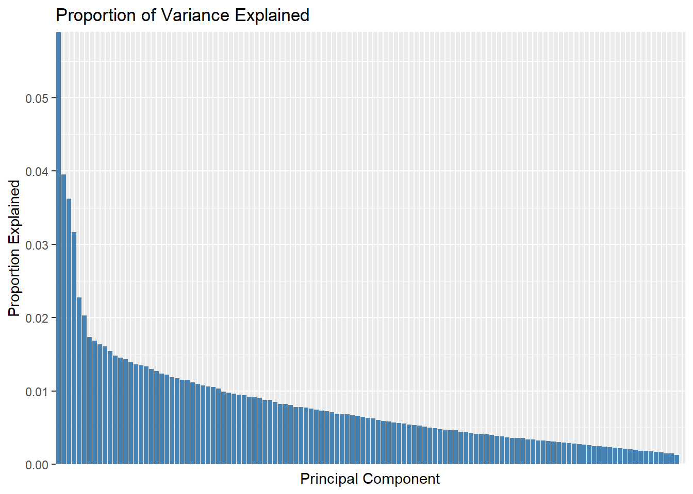
A cummulative plot over the PCs can be used to determine how many PCs are needed to explain the data. The green dashed line is set at 70% of the variance explained, and the red dashed line is set at the 49h PC. The plot then shows that 49 PCs are needed to explain 70% of the variance.
pca_count_matrix |>
tidy(matrix = "eigenvalues") |>
ggplot(aes(x = reorder(PC, -percent),
y = cumulative)) +
geom_col(fill = "steelblue") +
geom_hline(yintercept = 0.7,
linetype = "dashed",
colour = "green",
size = 1) +
geom_vline(xintercept = "49",
linetype = "dashed",
colour = "red",
size = 1) +
scale_y_continuous(expand = c(0, 0)) +
labs(title = "Cummulative Proportion of Variance Explained",
x = "Principal Component",
y = "Cummulative Proportion Explained") +
theme(axis.text.x = element_blank(),
axis.ticks.x = element_blank())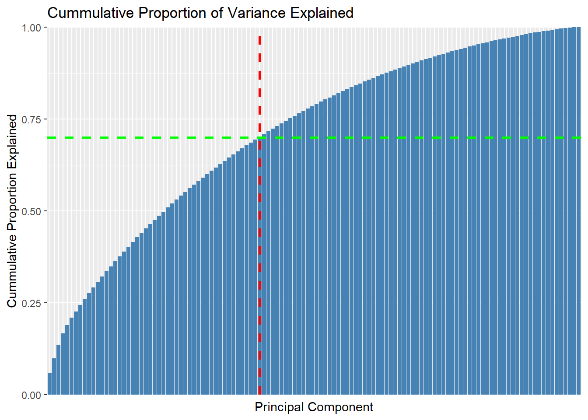
It is for quite obvious reasons not possible to plot the first 49 PCs in a single plot. Instead, the first two PCs are plotted to show the data in a 2D space. The data is colored by the Patient_status variable, which shows that the data is not easily separable in the 2D space. Since the first two PCs only explain approximately 1% of the variance, it is expected that the data is not separable. It is then also an assumption, that the data is even separable in the high dimensional space which is unknown. If the data is separable, it is expected that the separation is more pronounced in the higher dimensions as more variance is explained.
pca_count_matrix |>
tidy(matrix = "x") |>
pivot_wider(names_from = "PC",
names_prefix = "PC",
values_from = "value") |>
rename(Sample = row) |>
left_join(meta,
by = "Sample") |>
ggplot(aes(x = PC1,
y = PC2,
colour = factor(Patient_status))) +
geom_point(size = 3) +
labs(title = "Principal Component Analysis",
x = "PC1",
y = "PC2",
colour = "Patient Status")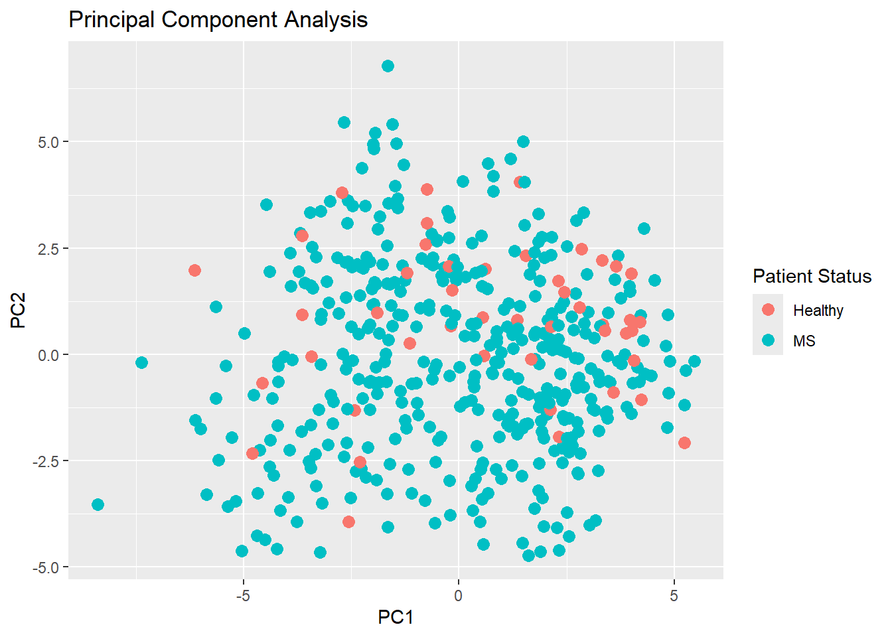